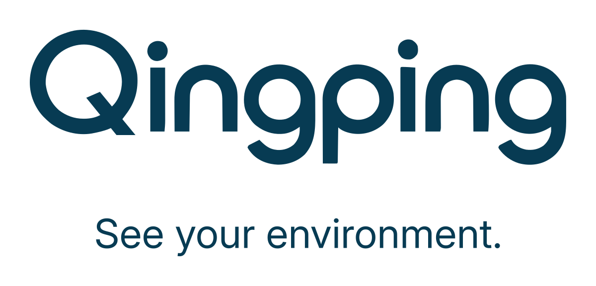
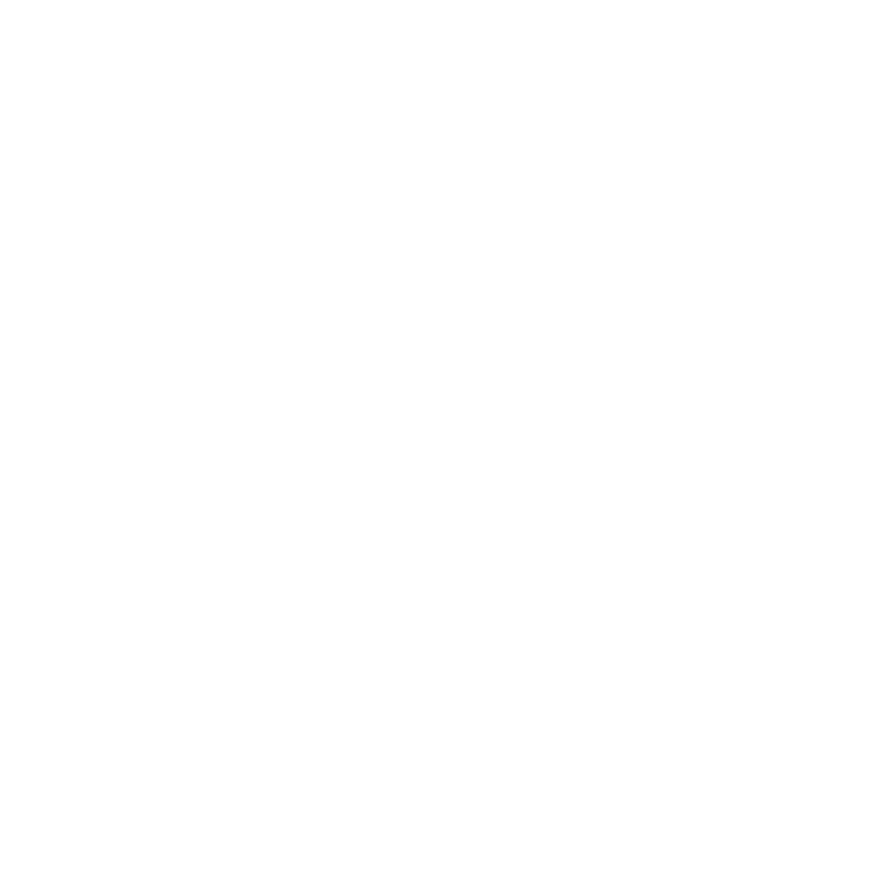
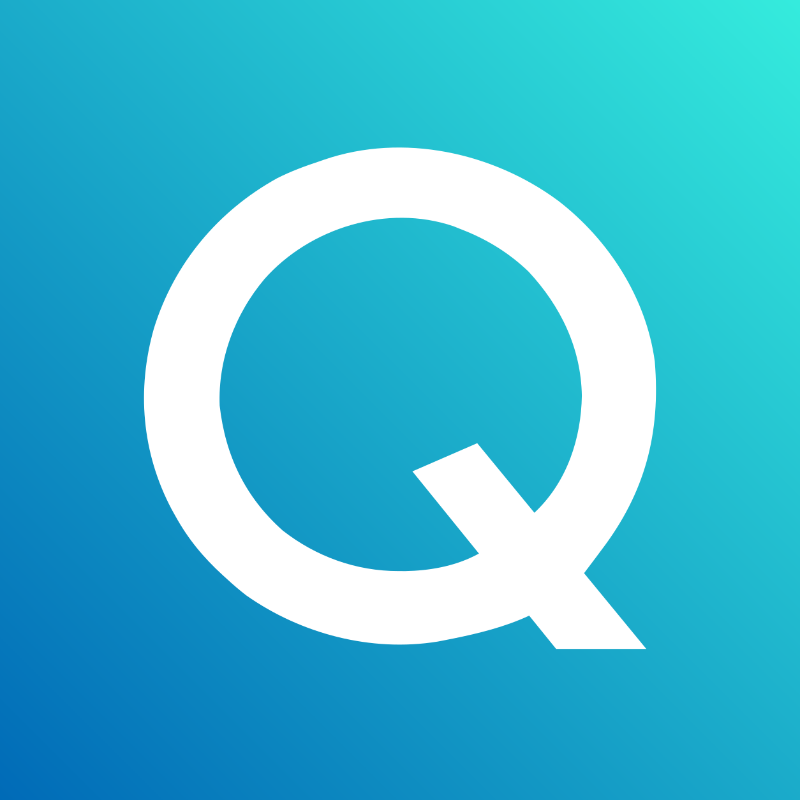

青萍绿
- HEX
#1FB6AE- RGB
31, 182, 174- CMYK 参考 %
C69 / M2 / Y32 / K0- PANTONE 近似参考
- 326 C
青萍品牌规范与素材
看见环境。
See your environment.
用于与 Logo 并置的品牌表达。
看见环境，让舒适有据可依。
See your environment. Know your comfort.
用于官网介绍、产品包装和品牌传播，承接从感知到理解的递进。
中英文按使用场景选择，保持以上文字、大小写与标点。主 Slogan 与展开文案分层使用，不必同时出现。
完整字标搭配品牌主张，优先使用上下排列。以下比例为组合使用建议，供实际应用时参考。
 看见环境。
看见环境。推荐用于官网首屏、包装正面与品牌署名。字标与文案居中对齐。
字标宽度 W · 文案字号 0.075W · 垂直间距 0.10W
青萍蓝字标搭配 Inter Regular，适用于英文官网、包装与品牌署名。文字已转为路径，透明背景。
字标宽度 W · 文案字号 0.075W · 垂直间距 0.10W看见环境。用于页尾、横幅等横向空间。文案与字标按视觉中心对齐，保留充足间距。
字标宽度 W · 文案字号 0.10W · 水平间距 0.16W
看见环境，让舒适有据可依。See your environment. Know your comfort.用于品牌介绍、宣传页与包装背面。左对齐，以中文为主要阅读层级，英文作辅助。
字标宽度 W · 中文字号 0.075W · 英文字号 0.05W · 字标下间距 0.10W深色示例使用青萍蓝 #073B53 与白色。以上排版比例为本页设计建议，尚待确认为正式规范。
中文统一使用思源黑体简体中文版 Source Han Sans SC，英文、数字和单位使用 Inter。用于包装、说明书与品牌传播，以清晰的层级和舒展的留白呈现信息。
看见环境。
让舒适有据可依。
Regular 400 / Medium 500 / Bold 700
See your environment.
23.6 °C 48 %
Regular 400 / Medium 500 / Bold 700
| 用途 | 字重 | 印刷字号建议 | 行高 |
|---|---|---|---|
| 包装产品名 | Medium 500 | 24–36 pt | 1.2–1.35 倍 |
| 说明书章节标题 | Medium 500 | 12–16 pt | 1.4 倍 |
| 正文与操作步骤 | Regular 400 | 9–10.5 pt | 中文 1.6 / 英文 1.45 倍 |
| 参数与辅助说明 | Regular 400 | 8–9 pt | 1.5 倍 |
| 重要提示 | Bold 700 | 随所在正文 | 随所在正文 |
字号为印刷排版的起始建议；根据成品尺寸、纸张与阅读距离打样调整，法定标识按适用要求单独设置。以下网页示例用于展示层级，不代表印刷实物大小。
温湿度计
Temperature & Humidity Monitor
看见环境。
产品名使用 Medium，英文使用 Regular。产品名、英文说明与 Slogan 分层排列。
将设备放置在空气流通的位置，待读数稳定后，查看当前环境的温度与相对湿度。
Place the device in a well-ventilated area. Allow the readings to stabilize before checking the temperature and relative humidity.
提示 请以具体产品的正式说明书为准。
正文使用 Regular，标题使用 Medium。中文与英文分别成段，用段间距划分阅读层次。
23.6 °C
48 %
示意读数，用于展示数字、单位与标签的关系。
数字使用 Inter，数据列启用等宽数字并右对齐。数字与单位之间留空格，°C 作为完整单位；按技术标准要求设置例外。
#1FB6AE31, 182, 174C69 / M2 / Y32 / K0#009DB50, 157, 181C77 / M11 / Y16 / K3#073B537, 59, 83C91 / M54 / Y26 / K44#35ECDD53, 236, 221C43 / M0 / Y20 / K0sRGB → Generic CMYK Profile（Apple 系统配置），相对比色，通道百分比四舍五入为整数。
CMYK 为上述色彩配置下的转换参考值，不是 Pantone 官方 CMYK 配方。实际印刷需按印厂、纸张及 ICC 配置重新分色并打样。Pantone 为 Solid Coated（C，涂布纸）近似专色候选，由页面设计选作参考，未经实体色卡比对，不代表 Pantone 官方最近色或已确认品牌专色。非涂布纸需重新选取 U 色号。
Pantone 官方提醒，屏幕显示为模拟色，使用前应参照实体色卡。查看官方说明
CMYK 为指定配置下的参考值；PANTONE C 为涂布纸近似专色候选，须经实体色卡及打样核准。
SVG 矢量版本，字标已转为路径，无需安装字体，可等比缩放。
青萍绿、青萍青、青萍蓝三种品牌色字标，另备白色版。透明背景，裁去多余留白，保持已确认的字形和锐角 Q 尾巴。
沿用已确认的 Q 字形与青蓝渐变背景，用于浏览器标签、收藏夹及 PWA 安装图标。
Maskable 预览展示圆形裁切效果；下载文件保留完整方形画布，由系统决定最终形状。
从 Qingping 字标提取小写 p，与 Q 共用青蓝渐变、白色字形和圆角规则，适合关联网站使用。

下载 P 网站图标包 ↓下载 P SVG ↓下载 P PNG ↓
包含 SVG、ICO、16 / 32 / 48 px PNG、180 px Apple Touch、192 / 512 px PWA、自适应图标与引用说明。
使用品牌 Q 与青蓝渐变，提供 Xcode 可直接使用的 AppIcon 素材。桌面应用名称建议显示为 Qingping。

圆角为显示示意；正式 PNG 保留不透明方形画布，由系统处理圆角。
将包内的 AppIcon.appiconset 加入工程的 Assets.xcassets，在 Target 的 App Icons 中选择 AppIcon。已有同名资源时先备份或改名。
素材已通过 Xcode 的 iPhone / iPad 资源编译。本包为标准平面图标，未另设深色、着色或 Liquid Glass 分层版本。
使用品牌 Q 与青蓝渐变，提供 Android 原生 App 可直接接入的图标素材。桌面应用名称建议显示为 Qingping。

预览中的外轮廓由系统裁切；主题图标颜色随系统主题变化。
将素材包中的 res/ 合并到 App 模块的 src/main/res/，并在现有 AndroidManifest.xml 的 <application> 上设置：
android:icon="@mipmap/ic_launcher"
android:roundIcon="@mipmap/ic_launcher_round"包内含矢量源文件、各尺寸图标及说明；Android 资源已通过编译检查。若工程已有同名资源，先备份或调整资源名称。
以下为使用建议，供品牌规范审阅。
品牌包建议完整字标显示宽度不低于 120 px；安全留白及正式最小使用尺寸待确认；印刷色彩按首节参考值打样核准。